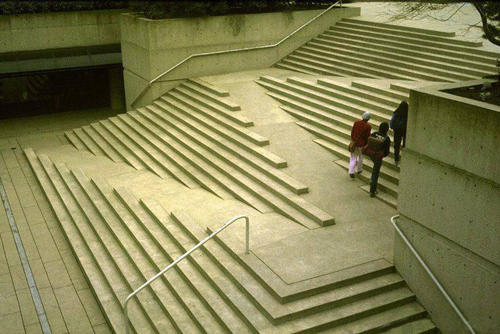

Lessons from Building an Accessible WordPress Theme
You can Build an Accessible Theme Too
David A. Kennedy
Front End Developer/Accessibility Analyst | Rock Creek Strategic Marketing
Hello!
I'm Dave.
I try to make the web a more accessible place.
- I like clean code, open source, CrossFit and peanut butter and jelly sandwiches.
- I worked as the Online Communications Manager for The Arc, a national nonprofit that serves people with disabilities.
- I use to be a journalist and still love writing.
Basically
I accessibility.
Where We're Headed?
- What is web accessibility?
- Why it's important?
- Accessible Zen
- A few lessons along the way...
What is Web Accessibility?
Definitions vary.
The practice of making websites and applications
usable by people of all abilities.
What is Web Accessibility?
WordPress likes this one:
Accessibility is the degree to which a product, device, service, or environment is available to as many people as possible.Cynthia Waddell
http://www.icdri.org/CynthiaW/cynthia_d.htm
Why it's Important?
Almost one in five Americans have a disability, according to the United States Census Bureau. Many of those disabilities, such as vision problems or mobility issues, can impact how people use the web.
http://www.census.gov/newsroom/releases/archives/miscellaneous/cb12-134.htmlWhy it's Important?
Accessibility can drive user-driven projects with better designs, easier to understand code, plus code that's more testable and secure. When you create accessible projects, they can impact other areas.
Examples
- A skip link doesn't just help people with disabilities, but keyboard users too
- Fonts set in relative units help in responsive design and people who resize text
- Well structured HTML helps screen readrs parse content and search engines find your content
Accessible Zen

1. Keep Your Goal in Mind
My number one goal was to build a simple, accessible WordPress theme. That was hard.
1. Keep Your Goal in Mind
I followed a master. I looked to Leo Babauta of Zen Habits for inspiration.
http://zenhabits.net/theme/1. Keep Your Goal in Mind
If you  your goal, stick with it.
your goal, stick with it.
2. Good Accessibility is Undetectable
I kept things modern, but still kept "accessible" as part of the name. Oh, and Accessible Zen isn't that much different from Underscores.
https://github.com/automattic/_s2. Good Accessibility is Undetectable
When I look at the final product, I can't see what makes it accessible on the surface.
2. Good Accessibility is Undetectable
your starter theme of choice, and use it.
3. Small Details Make a Big Difference
Obsess over them. A few examples:
3. Small Details Make a Big Difference
Start with the basics.
3. Small Details Make a Big Difference
Color matters. High contrast helps everyone.
- Text and images of text have a contrast ratio of at least 4.5:1
- Large text (over 18 point or 14 point bold) has a contrast ratio of at least 3:1
3. Small Details Make a Big Difference
Choose wisely:
3. Small Details Make a Big Difference
Skip nav links are awesome. I almost didn't put one in.
3. Small Details Make a Big Difference
Keep the underline on links and define focus styles. I went with a dotted border and a "depressed" effect on click to highlight links.
3. Small Details Make a Big Difference
I decided to display my titles with my "Read more" links.
3. Small Details Make a Big Difference
Small stuff needs too.
4. Recognize What You're Doing
You're making something!
4. Recognize What You're Doing
@DavidAKennedy @steveofmaine Thank you. SO far, I'm loving this one!!!
— Shane Jackson (@jack728) July 1, 2013
4. Recognize What You're Doing
Find someone who your work.
Wait a Minute!
You haven't talked a lot about WordPress? Or accessibility...
Mostly True
But there's more...
Where Do We Want to Be?

Three Areas of Impact
- Decisions
- People
- Details
1. Decisions
These are usually strategy-related usually. Sometimes, points of no return.
Example: Making a "separate, accessible" website.
2. People
What if they don't know?
Example: A developer makes a click-based interaction that closes a modal with a <a href="#">Fake Button</a> instead of a <button>Real Button</button>
3. Details
Hi, my name is minutia.
Example: Ensuring your colors are high contrast enough for a wide variety of people.
But Wait...
All of these can be one in the same. Yes.
What Do We Do About It?
Ask good questions.
Everyone has to Know One Thing
What makes something simple or complex? It's not the number of dials or controls or how many features it has: It is whether the person using the device has a good conceptual model of how it operates.-Donald Norman
Everyone has to Know One Thing
How does it work?
Help Us Help You!
- Help WordPress be Accessible: Make WordPress Accessibility Group
- Contribute to an accessible starter theme: Underscores
You're Awesome!
- Website: davidakennedy.com
- Talk: http://davidakennedy.github.io/wclc2014/
- Twitter: @DavidAKennedy
- Theme: http://wordpress.org/themes/accessible-zen